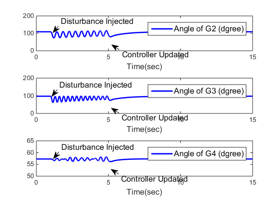
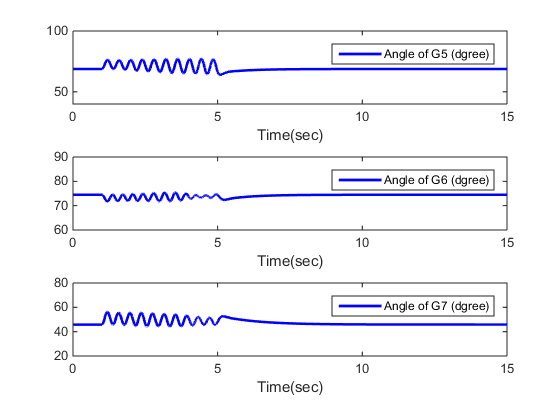
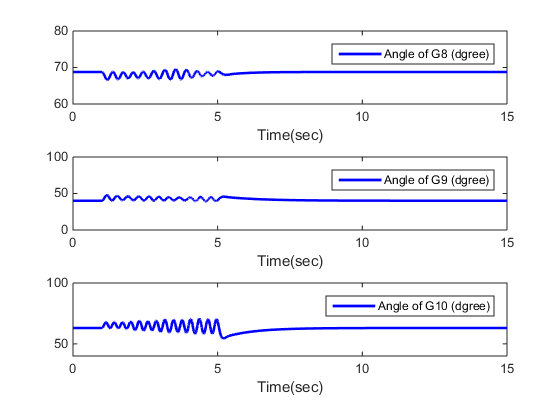
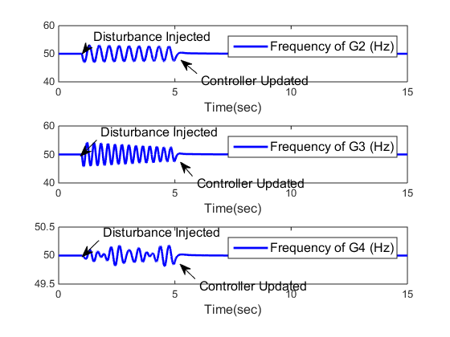
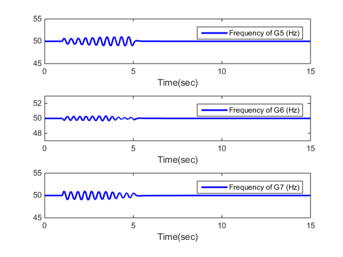
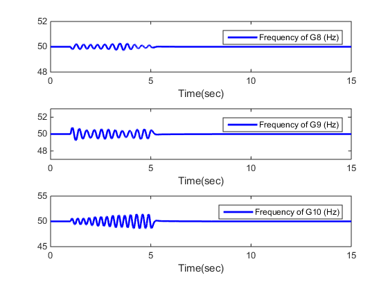

Contents
function Ch6Ex1_main()
RADP for a ten-machine power system
This is the Matlab code used for the paper:
Yu Jiang and Zhong-Ping Jiang, "Robust Adaptive Dynamic Programming for Large-Scale Systems with an Application to Multimachine Power Systems," IEEE Transactions on Circuits and Systems II: Params.Express Briefs, vol. 59, no. 10, pp. 693-697, 2012.
The code is free for everyone to use. Please cite the above paper in your publication if you do use the code.
Please contact yu.jiang@nyu.edu if you find any bugs or have any suggestions on improving the code. Thanks!
%load the parameters Params = Local_load_params(); [Nm, pm, imxx, imuu] = deal(Params.Nm, Params.pm, Params.imxx, Params.imuu); % simulate the system until 4s % operating in steady-state from 0s to 1s % Kadp = zeros(1,3,Nm); % Preallocating. Kadp = repmat([10 50 0],[1,1,Nm-1]); disp('Simulating the system on steady state to 1s...') [t0,y0] = ode45(@(t,x) Local_mmsys_online_radp(t,x,Kadp),[0,1],zeros(15*(Nm-1),1)); % add an impulse disturbance at 1s disp('Adding an impulse disturbance at 1s and simulating to 4s...') [t1,y1]=ode45(@(t,x) Local_mmsys_online_radp(t,x,Kadp), ... [1,4],y0(end,:)'-[kron(pm(2:end),[0,0,1]),zeros(1,12*(Nm-1))]'); y = y1(end,:); N = 20; % # of learning intervals stop_tol = 0.01; % Stop criterion Ixx = zeros(N,9,Nm-1); Ixu = zeros(N,3,Nm-1); Dxx = zeros(N,6,Nm-1); yy = [y0;y1]; tt = [t0;t1]; % Simulate the system from 4s to 5s to collect enough online information % for later offpolicy learning for cti = 0:N-1 disp(['simulating the ', num2str(cti+1),'-th interval...', ... num2str(N-cti), 'left']); % simulate the trajectories for learning [t,y]=ode45(@(t,x) Local_mmsys_online_radp(t,x,Kadp),[4+cti/N,4+(cti+1)/N],y(end,:)); for ctj = 1:Nm-1 Ixx(cti+1,:,ctj) = y(end,imxx(ctj):imxx(ctj)+8)-y(1,imxx(ctj):imxx(ctj)+8); Ixu(cti+1,:,ctj) = y(end,imuu(ctj):imuu(ctj)+2)-y(1,imuu(ctj):imuu(ctj)+2); Dxx(cti+1,:,ctj) = [y(end,1+(ctj-1)*3)^2-y(1,1+(ctj-1)*3)^2 y(end,1+(ctj-1)*3)*y(end,2+(ctj-1)*3)-y(1,1+(ctj-1)*3)*y(1,2+(ctj-1)*3) y(end,1+(ctj-1)*3)*y(end,3+(ctj-1)*3)-y(1,1+(ctj-1)*3)*y(1,3+(ctj-1)*3) y(end,2+(ctj-1)*3)^2-y(1,2+(ctj-1)*3)^2 y(end,2+(ctj-1)*3)*y(end,3+(ctj-1)*3)-y(1,2+(ctj-1)*3)*y(1,3+(ctj-1)*3) y(end,3+(ctj-1)*3)^2-y(1,3+(ctj-1)*3)^2]'; end yy = [yy;y]; tt = [tt;t]; end % off-Policy learning for all Generators K = repmat([10 50 0],[1,1,Nm-1]); for ctj = 1:Nm-1 Kprev = [100 100 100]; it=0; while (norm(K(:,:,ctj)-Kprev)>stop_tol) it = it+1; Kprev = K(:,:,ctj); Qk = 1000*eye(3)+K(:,:,ctj)'*K(:,:,ctj); Theta = [Dxx(:,:,ctj) -2*Ixx(:,:,ctj)*kron(eye(3),K(:,:,ctj)')-2*Ixu(:,:,ctj)*kron(eye(3),1)]; Psi = -Ixx(:,:,ctj)*Qk(:); % pv=inv(Theta'*Theta)*Theta'*Psi; pv = pinv(Theta)*Psi; K(:,:,ctj)=pv(end-2:end)'; end Kadp(:,:,ctj) = K(:,:,ctj); disp(['The' num2str(ctj+1) '-th machine stopped learning after' num2str(it) 'iterations']) end
Simulate the post-learning performance
[t,y]=ode45(@(t,x) Local_mmsys_online_radp(t,x,Kadp),[5,15],y(end,:)); y=[yy;y];t=[tt;t]; % Clean up clear Local_mmsys_online_radp % plot the angles Local_plot(t,y,Params.dlt0);     
end
Local_mmsys_online_radp
Local function to simulat the dynamics of the multimachine power system.
function dxx = Local_mmsys_online_radp(t,xx, Kadp) persistent Params if isempty(Params) Params = Local_load_params(); end A = Params.A; B = Params.B; Nm = Params.Nm; x = zeros(3,Nm); for ct = 2:Nm id = (ct-2)*3 + 1:(ct-2)*3+3; x(:,ct) = xx(id); end % calculate angular differences in matrix form dlt=zeros(Nm);d=zeros(1,Nm); for i=1:Nm dlt(i,:)=x(1,i)+Params.dlt0(i)-x(1,:)-Params.dlt0'; d(i)= Params.E(i)*(Params.E.*(x(2,i)-x(2,:)))*(Params.BX(i,:).*cos(dlt(i,:))-Params.GX(i,:).*sin(dlt(i,:)))'; end u = zeros(Nm,1); for i=2:Nm if t>=4 && t<=5 % learning stage is between 4s and 5s u(i) = -Kadp(:,:,i-1)*x(:,i)+0.001*sin(100*t); else u(i) = -Kadp(:,:,i-1)*x(:,i); end end for i = 2:Nm dx(:,i-1) = A(:,:,i)*x(:,i)+B(:,:,i)*(u(i)-d(i)); end dIxxu=zeros(12,Nm-1); if t>=4 && t<=5 for i=2:Nm dIxxu(:,i-1)=[kron(x(:,i),x(:,i));kron(x(:,i),u(i)-d(i))]; end end dxx = [dx(:); dIxxu(:)]; end
Adding an impulse disturbance at 1s and simulating to 4s... simulating the 1-th interval...20left simulating the 2-th interval...19left simulating the 3-th interval...18left simulating the 4-th interval...17left simulating the 5-th interval...16left simulating the 6-th interval...15left simulating the 7-th interval...14left simulating the 8-th interval...13left simulating the 9-th interval...12left simulating the 10-th interval...11left simulating the 11-th interval...10left simulating the 12-th interval...9left simulating the 13-th interval...8left simulating the 14-th interval...7left simulating the 15-th interval...6left simulating the 16-th interval...5left simulating the 17-th interval...4left simulating the 18-th interval...3left simulating the 19-th interval...2left simulating the 20-th interval...1left The2-th machine stopped learning after13iterations The3-th machine stopped learning after11iterations The4-th machine stopped learning after11iterations The5-th machine stopped learning after11iterations The6-th machine stopped learning after10iterations The7-th machine stopped learning after10iterations The8-th machine stopped learning after11iterations The9-th machine stopped learning after11iterations The10-th machine stopped learning after10iterations
Local_plot
Plot results
function Local_plot(t,y,dlt0) %Plot the power angles of G2-G10 figure(1) subplot(311) plot(t,(y(:,1)+dlt0(2))*180/pi,'b','linewidth',2) xlabel('Time(sec)', 'FontSize', 12) l = legend('Angle of G2 (dgree)'); set(l, 'FontSize', 12) axis([0 15 0 200]) subplot(312) plot(t,(y(:,4)+dlt0(3))*180/pi,'b','linewidth',2) xlabel('Time(sec)', 'FontSize', 12) l = legend('Angle of G3 (dgree)'); set(l, 'FontSize', 12) axis([0 15 0 200]) subplot(313) plot(t,(y(:,7)+dlt0(4))*180/pi,'b','linewidth',2) xlabel('Time(sec)', 'FontSize', 12) l = legend('Angle of G4 (dgree)'); set(l, 'FontSize', 12) axis([0 15 50 65]) annotation(figure(1),'textarrow',[0.424517593643587 0.398365782488103],... [0.16729088639201 0.189882327941137],'String',{'Controller Updated'},... 'FontSize',12); annotation(figure(1),'textarrow',[0.425440032308299 0.399288221152816],... [0.460015659616231 0.482607101165358],'String',{'Controller Updated'},... 'FontSize',12); annotation(figure(1),'textarrow',[0.426787741203178 0.400635930047695],... [0.762796504369538 0.785387945918666],'String',{'Controller Updated'},... 'FontSize',12); annotation(figure(1),'textarrow',[0.208516886930984 0.190650614335506],... [0.874592833876222 0.84401986774277],'String',{'Disturbance Injected'},... 'FontSize',12); annotation(figure(1),'textarrow',[0.204111600587371 0.186245327991894],... [0.570032573289903 0.539459607156451],'String',{'Disturbance Injected'},... 'FontSize',12); annotation(figure(1),'textarrow',[0.209985315712188 0.19211904311671],... [0.27198697068404 0.241414004550588],'String',{'Disturbance Injected'},... 'FontSize',12); figure(2) subplot(311) plot(t,(y(:,1+9)+dlt0(2+3))*180/pi,'b','linewidth',2) xlabel('Time(sec)') legend('Angle of G5 (dgree)') axis([0 15 40 100]) subplot(312) plot(t,(y(:,4+9)+dlt0(3+3))*180/pi,'b','linewidth',2) xlabel('Time(sec)') legend('Angle of G6 (dgree)') axis([0 15 60 90]) subplot(313) plot(t,(y(:,7+9)+dlt0(4+3))*180/pi,'b','linewidth',2) xlabel('Time(sec)') legend('Angle of G7 (dgree)') axis([0 15 20 80]) figure(3) subplot(311) plot(t,(y(:,1+9+9)+dlt0(2+6))*180/pi,'b','linewidth',2) xlabel('Time(sec)') legend('Angle of G8 (dgree)') axis([0 15 60 80]) subplot(312) plot(t,(y(:,4+9+9)+dlt0(3+6))*180/pi,'b','linewidth',2) xlabel('Time(sec)') legend('Angle of G9 (dgree)') axis([0 15 0 100]) subplot(313) % plot the angles plot(t,(y(:,7+9+9)+dlt0(4+6))*180/pi,'b','linewidth',2) xlabel('Time(sec)') legend('Angle of G10 (dgree)') axis([0 15 40 100]) % Plot the frequencies figure(4) subplot(311) plot(t,y(:,2)*2/pi+50,'b','linewidth',2) xlabel('Time(sec)', 'FontSize', 12) l = legend('Frequency of G2 (Hz)'); set(l, 'FontSize', 12) axis([0 15 -10+50 10+50]) subplot(312) plot(t,y(:,5)*2/pi+50,'b','linewidth',2) xlabel('Time(sec)', 'FontSize', 12) l = legend('Frequency of G3 (Hz)'); set(l, 'FontSize', 12) axis([0 15 -10+50 10+50]) subplot(313) % plot the angles plot(t,y(:,8)*2/pi+50,'b','linewidth',2) xlabel('Time(sec)', 'FontSize', 12) l = legend('Frequency of G4 (Hz)'); set(l, 'FontSize', 12) axis([0 15 -.5+50 .5+50]) annotation(figure(4),'textarrow',[0.219236209335219 0.182764994466165],... [0.285714285714286 0.238495847775444],'String',{'Disturbance Injected'},... 'FontSize',12); annotation(figure(4),'textarrow',[0.214449541284404 0.178980753001389],... [0.58403869407497 0.536862481813178],'String',{'Disturbance Injected'},... 'FontSize',12); annotation(figure(4),'textarrow',[0.198019801980198 0.18291746711841],... [0.866666666666667 0.840668550794581],'String',{'Disturbance Injected'},... 'FontSize',12); annotation(figure(4),'textarrow',[0.437057991513437 0.402604606212398],... [0.782539682539683 0.820868546955883],'String',{'Controller Updated'},... 'FontSize',12); annotation(figure(4),'textarrow',[0.427157001414427 0.401190179055397],... [0.477777777777778 0.518496231645235],'String',{'Controller Updated'},... 'FontSize',12); annotation(figure(4),'textarrow',[0.432814710042433 0.400311028230748],... [0.173015873015873 0.215895513808725],'String',{'Controller Updated'},... 'FontSize',12); figure(5) subplot(311) plot(t,y(:,2+9)*2/pi+50,'b','linewidth',2) xlabel('Time(sec)') legend('Frequency of G5 (Hz)') axis([0 15 -5+50 5+50]) subplot(312) plot(t,y(:,5+9)*2/pi+50,'b','linewidth',2) xlabel('Time(sec)') legend('Frequency of G6 (Hz)') axis([0 15 -3+50 3+50]) subplot(313) % plot the angles plot(t,y(:,8+9)*2/pi+50,'b','linewidth',2) xlabel('Time(sec)') legend('Frequency of G7 (Hz)') axis([0 15 -5+50 5+50]) figure(6) subplot(311) plot(t,y(:,2+9+9)*2/pi+50,'b','linewidth',2) xlabel('Time(sec)') legend('Frequency of G8 (Hz)') axis([0 15 -2+50 2+50]) subplot(312) plot(t,y(:,5+9+9)*2/pi+50,'b','linewidth',2) xlabel('Time(sec)') legend('Frequency of G9 (Hz)') axis([0 15 -3+50 3+50]) subplot(313) % plot the angles plot(t,y(:,8+9+9)*2/pi+50,'b','linewidth',2) xlabel('Time(sec)') legend('Frequency of G10 (Hz)') axis([0 15 -5+50 5+50]) end
Local_load_params
Local parameters for simulation setting and for the machine dynamics
function Params = Local_load_params() omg0=314.159; %steady state frequency Nm=10; %# of machines H= [100 6.4 3 5.5 5.2 4.7 5.4 4.9 5.1 3.4]; D= [0 1 1.5 2 2.2 2.3 2.6 1.8 1.7 2.9]; T= [0 6 6.3 4.9 6.6 5.8 5.9 5.5 5.4 5.5]; E= [1 1.2 1.5 .8 1.3 0.9 1.1 .6 1.5 1]; dlt0=[0 1.9 1.7 1 1.2 1.3 .8 1.2 .7 1.1]'; imxx=(Nm-1)*3+1+[0:(Nm-2)]*12; imuu=imxx+9; BX=[0.2537 0.1875 0.0132 0.2967 0.2852 0.4848 0.2443 0.0908 0.2149 0.2335 0.1875 0.3927 0.2493 0.5291 0.2827 0.2909 0.3759 0.3272 0.2354 0.3819 0.0132 0.2493 0.0545 0.2712 0.2465 0.2230 0.2741 0.2147 0.3280 0.4937 0.2967 0.5291 0.2712 0.5746 0.3255 0.3301 0.1325 0.2878 0.4921 0.1255 0.2852 0.2827 0.2465 0.3255 0.2067 0.3724 0.3049 0.0294 0.2433 0.3146 0.4848 0.2909 0.2230 0.3301 0.3724 0.4621 0.2790 0.4083 0.3542 0.1356 0.2443 0.3759 0.2741 0.1325 0.3049 0.2790 0.1151 0.4265 0.1437 0.5278 0.0908 0.3272 0.2147 0.2878 0.0294 0.4083 0.4265 0.3280 0.1635 0.4432 0.2149 0.2354 0.3280 0.4921 0.2433 0.3542 0.1437 0.1635 0.3644 0.2120 0.2335 0.3819 0.4937 0.1255 0.3146 0.1356 0.5278 0.4432 0.2120 0.3681]; GX=0.1*[2.1043 0.5194 0.0047 1.3971 0.4052 -0.1143 0.0088 2.8105 -0.7849 -0.0019 0.5194 2.9397 0.3410 0.1829 1.2937 -1.7493 -0.0346 -0.0512 -1.0858 -0.3718 0.0047 0.3410 1.5196 1.7842 -2.6536 -0.9942 1.5418 -0.4936 2.2536 2.7643 1.3971 0.1829 1.7842 0.4805 -1.1049 -0.7318 2.2099 -1.1210 2.3378 -1.4679 0.4052 1.2937 -2.6536 -1.1049 0.8255 -2.0058 -0.7204 -1.9231 0.3224 -1.4969 -0.1143 -1.7493 -0.9942 -0.7318 -2.0058 0.2316 -0.2891 0.3602 1.1842 -0.6656 0.0088 -0.0346 1.5418 2.2099 -0.7204 -0.2891 0.3899 0.6421 0.6078 -0.9809 2.8105 -0.0512 -0.4936 -1.1210 -1.9231 0.3602 0.6421 2.6875 1.3337 1.1306 -0.7849 -1.0858 2.2536 2.3378 0.3224 1.1842 0.6078 1.3337 1.9344 -1.7285 -0.0019 -0.3718 2.7643 -1.4679 -1.4969 -0.6656 -0.9809 1.1306 -1.7285 2.0532]; A=zeros(3,3,Nm); B=zeros(3,1,Nm); K00=[1 1.5 20]; Kstar=K00; pm=0; for i=2:Nm A(:,:,i)=[0 1 0; 0 -D(i)/2/H(i) omg0/2/H(i); 0 0 -1/T(i)]; B(:,:,i)=[0;0;1/T(i)]; pm(i)=E(i)*(E.*BX(i,:)*sin(dlt0(i)-dlt0)+E.*GX(i,:)*cos(dlt0(i)-dlt0)); Kstar(:,:,i-1)=lqr(A(:,:,i),B(:,:,i),1000*eye(3),1); end Params.Nm = Nm; Params.dlt0 = dlt0; Params.BX = BX; Params.GX = GX; Params.E = E; Params.A = A; Params.B = B; Params.pm = pm; Params.imxx = imxx; Params.imuu = imuu; end
Simulating the system on steady state to 1s...